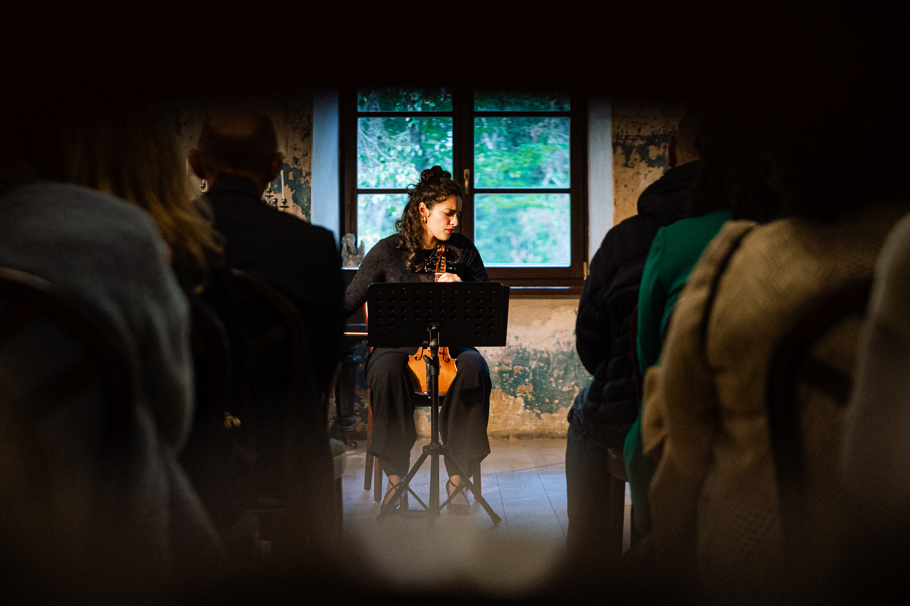
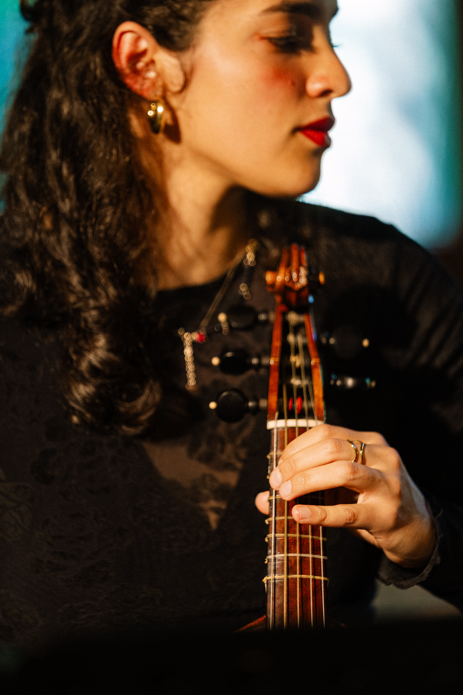
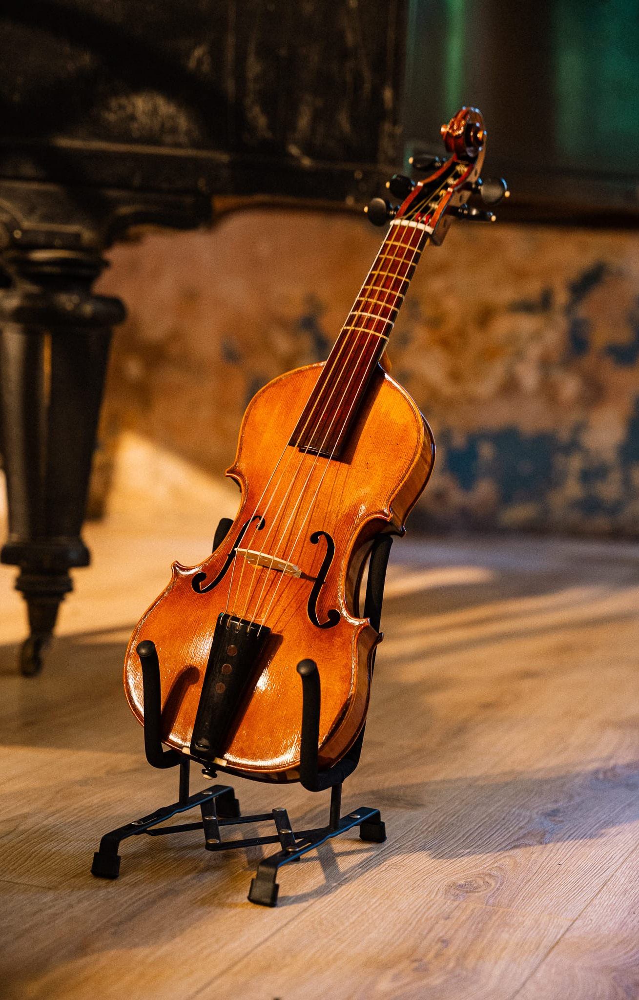
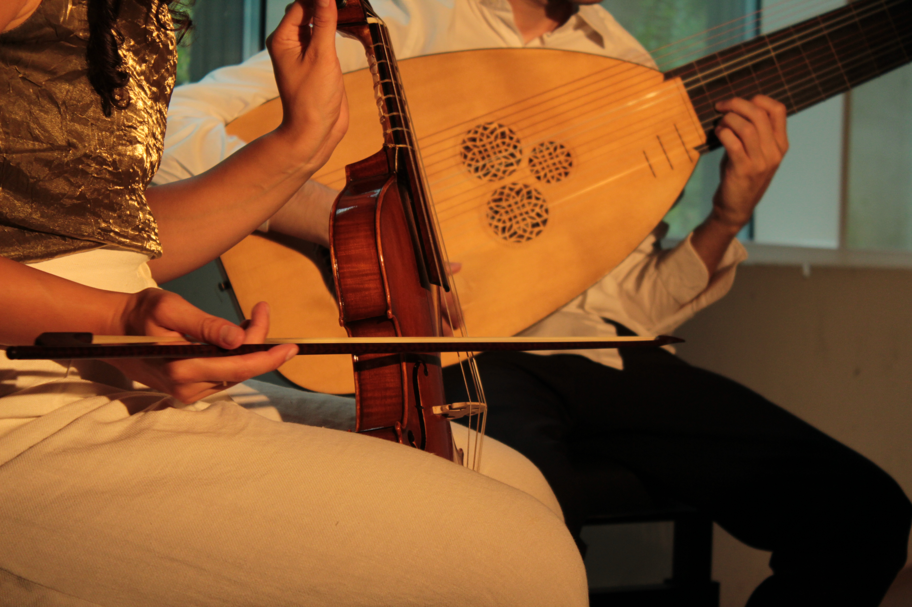
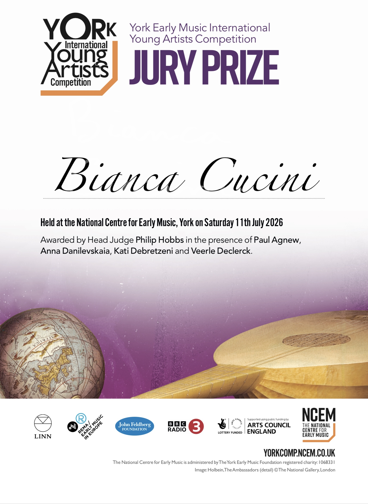

Il quinton è uno strumento ad arco a cinque corde, sviluppatosi in Francia nel corso del XVIII secolo e strettamente legato alla cultura musicale francese dell'epoca. Il suo nome deriva proprio dal termine quinte, in riferimento alla presenza di cinque corde, generalmente accordate in un'accordatura ibrida tra un violino e una viola da gamba, data la presenza di due quarte e due quinte. Questa caratteristica permette di combinare una notevole estensione acuta con un registro centrale e grave particolarmente ricco. Il risultato è un timbro molto flessibile, capace di passare da una sonorità brillante e penetrante a un colore più morbido.
Il quinton rimane oggi uno strumento relativamente raro, ma il crescente interesse per la prassi esecutiva storicamente informata ha portato a una riscoperta delle sue possibilità. La sua particolarità non risiede soltanto nella quinta corda, ma nella sua capacità di incarnare una concezione settecentesca dello strumento musicale come oggetto flessibile, sperimentale e talvolta virtuosistico.
È esattamente su questo concetto che mi sono basata in tutte le mie sperimentazioni su questo strumento, arrivando ad eseguire interi concerti con solo repertorio violinistico.
Galleria fotografica

01
02 03
03
04
05
06